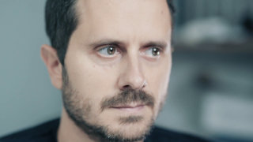

I am a Senior Research Scientist at the Idiap Research Institute, with research interests covering robot learning, optimal control, geometrical approaches, and human-robot collaboration. I am also a Lecturer at the Ecole Polytechnique Fédérale de Lausanne (EPFL).
My work focuses on human-centered robotics applications in which the robots can acquire new skills from only few demonstrations and interactions. It requires the development of models that can exploit the structure and geometry of the acquired data in an efficient way, the development of optimal control techniques that can exploit the learned task variations and coordination patterns, and the development of intuitive interfaces to acquire meaningful demonstrations.
The developed approaches can be applied to a wide range of manipulation skills, with robots that are either close to us (assistive and industrial robots), parts of us (prosthetics and exoskeletons), or far away from us (teleoperation). My research is supported by the European Commission, by the Swiss National Science Foundation, by the State Secretariat for Education, Research and Innovation, and by the Swiss Innovation Agency.
You can download my research statement in PDF format.